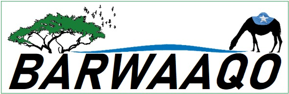
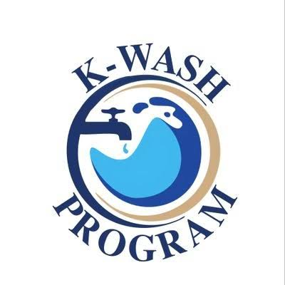
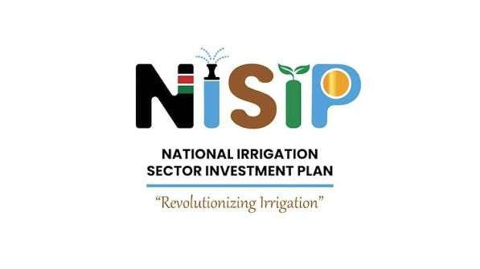
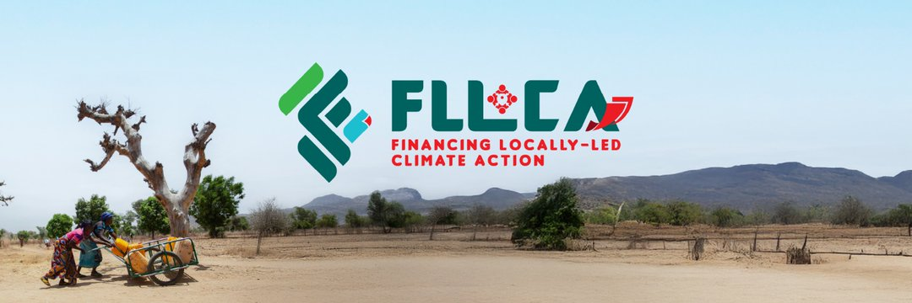
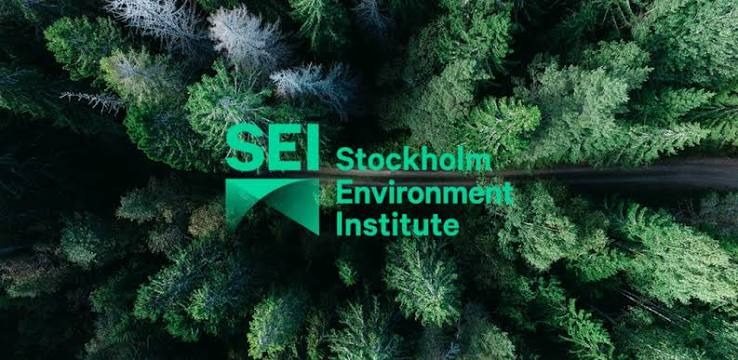

0
Kenyan counties supported through climate and water investment planning
Bridging hydrological science, spatial intelligence and development operations to strengthen water-security and climate-resilient investments across Africa and beyond.

Water. Climate. Space.
Kenyan counties supported through climate and water investment planning
Major African river basins covered through doctoral research
Digital monitoring and decision support systems developed/supported
Hydrological studies systematically analysed
Working at the intersection of water science, climate resilience and spatial intelligence. The practical question underneath the work is simple: how can better evidence lead to better water-investment decisions?
Supporting water security, WASH, irrigation, basin planning, climate resilience and digital monitoring. The thread connecting research and operations is the same: turning complex water information into something people can actually act on.
Practice
01
Basin and Catchment Planning · IWRM · Hydrology · Groundwater · WASH/MUS · Water Governance.
02
Climate-risk & Vulnerability Assessment · Adaptation · Drought & Flood Risk · Climate Services · Nature-based Solutions · Ecosystem-based Adaptation.
03
GIS · Earth Observation · Remote Sensing · Spatial Analytics · Digital Water Systems · Decision Support Tools.
04
GEMS · GIS/MIS · Dashboards · KoboToolbox · Decision Support Systems · R · Python · MATLAB · Google Earth Engine · Hydrological Modelling.
05
Investment Planning· Project Preparation & Implementation · Technical Review · MEL
Selected work
Somalia
Lead geospatial monitoring and support integrated water and land planning, bringing together GEMS, basin diagnostics, climate and El Niño risk intelligence, and water resource evidence to strengthen resilient investment planning and programme decision-making
Explore project →
Kenya
Support climate-resilient water investment across 19 counties through technical review of county investment plans, climate and water-risk analytics, decision-support tools, and practical guidance for more sustainable and climate-proof rural water systems.
Explore project →
Kenya
As NIIC Workstream Integrator, I coordinate the technical architecture, digital platforms, monitoring systems, data governance and institutional partnerships needed to translate Kenya's National Irrigation Informatics Centre from strategic vision into an operational decision support system.
Explore project →
Kenya
Integrate water resource management and climate-risk considerations into locally led climate planning, while connecting evidence, lessons and approaches across FLLoCA and K-WASH to strengthen county-level investment decisions.
Explore project →
Africa
Worked across water systems, climate resilience and WEF Nexus, combining research, spatial and systems analysis, stakeholder engagement and knowledge translation to support more integrated and climate-resilient natural resource planning in Africa .
Explore project →
Working across scales
Research scale
12 African river basins · 729 studies
Operational scale
Kenya · Somalia · 19 Kenyan counties
How I work
Science → Intelligence → Decisions → Investment → Resilience

Field
Doctoral research
How confident are we in the evidence used to understand African water systems?
Doctoral work at Rhodes University examined uncertainty across global models, reanalysis, Earth observation and local data — and how those disagreements should be handled in data-scarce basins.
Triangulation
Speaking

World Bank E4T · 2026

Africa Hydrology Conference · Cairo

UN Space4Water · San José
Publications
Scientific African · 2020
Spatio-temporal drought indices for the Upper Tana River watershed.
International Journal of Plant & Soil Science · 2019
Spatial evaluation of drought using selected satellite-based indices.
IAHS · 2023
Comparison and validation of global model outputs against local hydrological evidence.
Stockholm Environment Institute · 2024
Applying the water-energy-food nexus to ecosystem-based adaptation in the Ewaso Ng’iro North catchment.
Career journey
2015
GIS & water utility operations
2021
Doctoral hydrology
2022
International research & technical engagement
2024
SEI Africa
2025
World Bank Africa Fellow
Now
Water GP, Africa East
Contact
Water security · Climate resilience · Geospatial intelligence · Research collaboration · Speaking